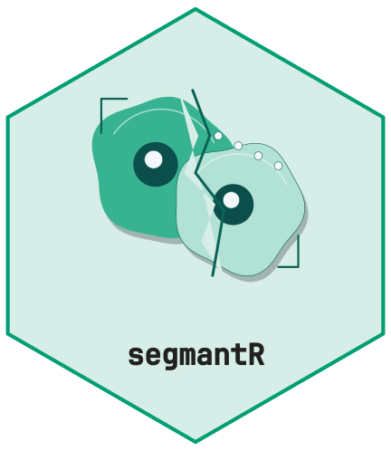
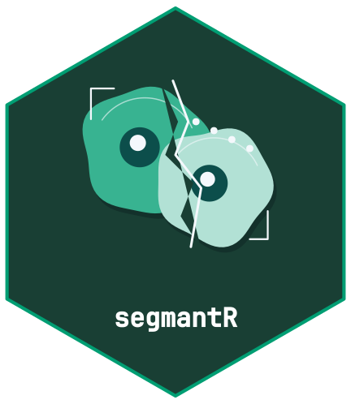
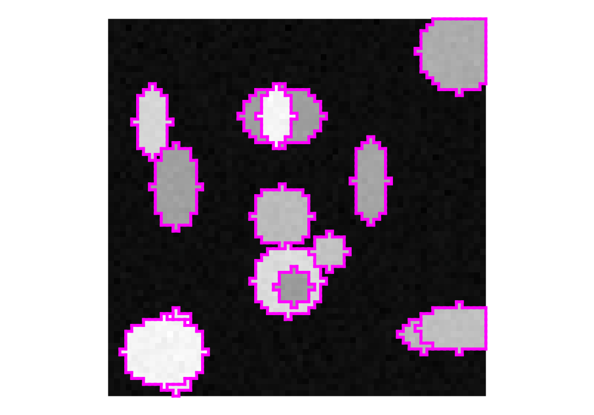
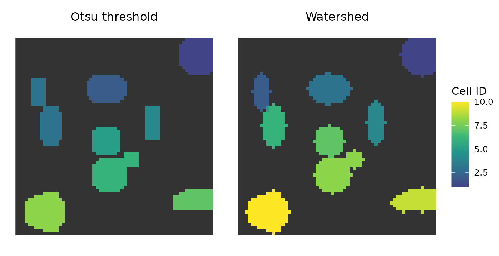
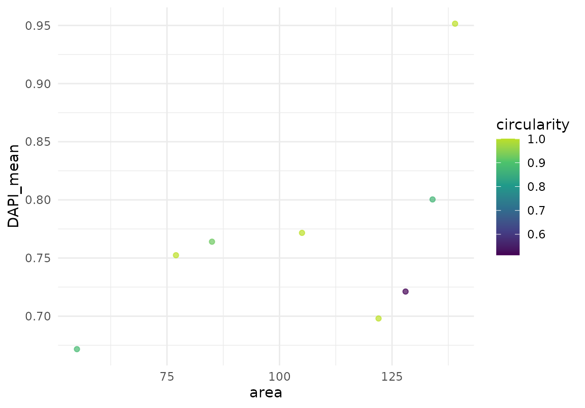
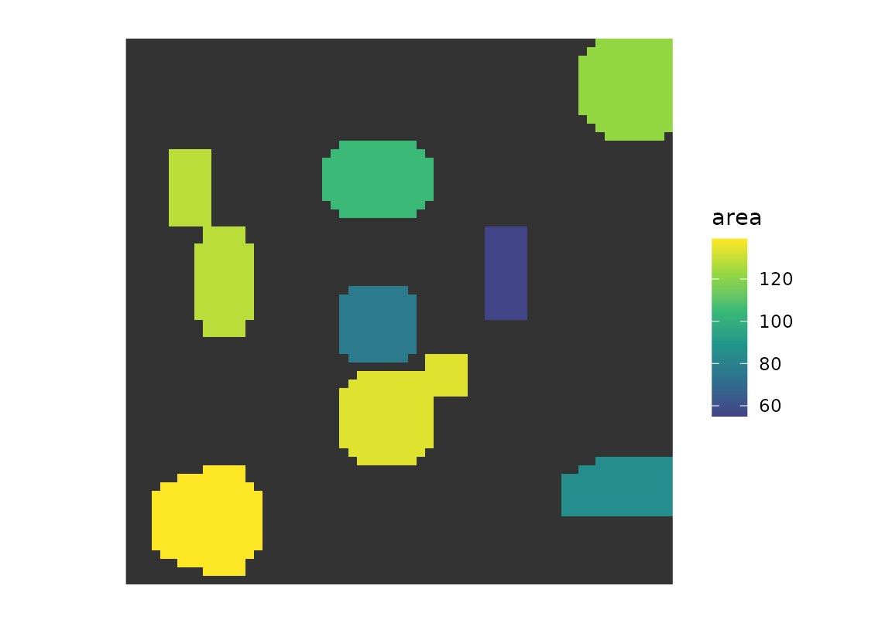
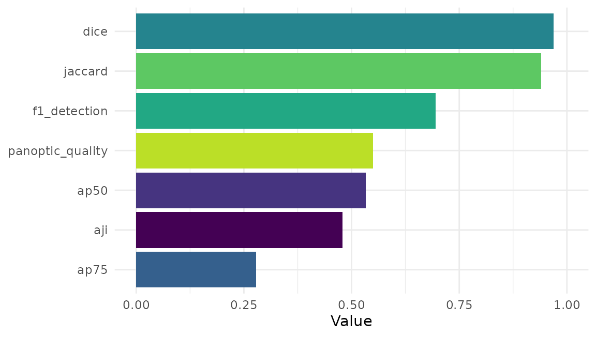

library(segmantR)
#> segmantR v0.3.0 -- Cell Segmentation with Human-in-the-Loop
#> Optional backends are checked when used; see sg_interchange_capabilities().This vignette segments a small synthetic fluorescence image, measures
the cells, compares the result with a reference mask and draws the
standard figures. Everything here runs in R alone: no Python, QuPath or
Bioconductor package is needed. The deep learning backends, protocols
and exchange formats are covered in
vignette("protocols-and-interop").
Images and masks
An sg_image holds pixels as a
[row, column, channel] array with channel names; an
sg_mask holds an integer label matrix in which 0 is
background and every positive value is one cell.
sg_read_image() reads image files; here the built-in
synthetic example is used.
img <- sg_example_image("fluorescence_nuclei")
img
#> <sg_image>: 64 x 64 (1 channel)
reference <- sg_example_mask("fluorescence_nuclei")
reference
#> <sg_mask>: 64 x 64, 15 cells
#> Method: syntheticsg_plot_overlay() draws one channel with the cell
outlines of a mask:
sg_plot_overlay(img, reference)
Segment
Otsu thresholding followed by connected-component labelling is the
simplest method. min_area and max_area are in
pixels.
otsu <- sg_segment_threshold(img, method = "otsu", min_area = 5)
#> ℹ Threshold applied using "otsu" method.
#> ✔ Segmented 8 objects via threshold (otsu).
otsu
#> <sg_mask>: 64 x 64, 8 cells
#> Method: threshold:otsuTouching nuclei merge under a global threshold. A watershed seeded at
the intensity peaks (seed_method = "h_minima", with
h as the minimum peak height) separates some of them:
ws <- sg_segment_watershed(img, seed_method = "h_minima", h = 0.1,
expand_pixels = 0)
#> ℹ Generated 10 seeds via "h_minima".
#> ✔ Watershed segmented 10 objects.
ws
#> <sg_mask>: 64 x 64, 10 cells
#> Method: watershed
sg_plot_comparison(otsu, ws, labels = c("Otsu threshold", "Watershed"))
Measure
sg_extract_features() returns one row per cell.
Intensity columns are named after the channel, here
DAPI.
feat <- sg_extract_features(img, otsu,
features = c("intensity", "morphology"))
#> ✔ Extracted intensity, morphology features for 8 cells.
feat[, c("cell_id", "DAPI_mean", "area", "circularity")]
#> # A tibble: 8 × 4
#> cell_id DAPI_mean area circularity
#> <int> <dbl> <int> <dbl>
#> 1 1 0.698 122 1
#> 2 2 0.772 105 1
#> 3 3 0.721 128 0.513
#> 4 4 0.672 55 0.882
#> 5 5 0.752 77 1
#> 6 6 0.800 134 0.870
#> 7 7 0.764 85 0.924
#> 8 8 0.952 139 1
sg_plot_features(feat, x = "area", y = "DAPI_mean", color = "circularity")
Any measured feature can be mapped back onto the mask:
sg_plot_mask(otsu, color_by = "area", features = feat)
Evaluate
sg_evaluate_segmentation() compares a predicted mask
with a reference: pixel overlap (Dice, Jaccard), the aggregated Jaccard
index, panoptic quality, and detection scores at IoU thresholds of 0.5
and 0.75.
metrics <- sg_evaluate_segmentation(otsu, reference)
#> ✔ Computed 7 segmentation metrics.
metrics
#> <sg_eval> — Segmentation Evaluation
#> ────────────────────────────────────────────────────────────────────────────────
#> dice: 0.969
#> jaccard: 0.9399
#> aji: 0.4793
#> panoptic_quality: 0.5492
#> ap50: 0.5333
#> ap75: 0.2778
#> f1_detection: 0.6957
#> ────────────────────────────────────────────────────────────────────────────────
sg_plot_metrics(metrics)
The pixel overlap is high, but the instance scores show that several reference nuclei were merged. The watershed result can be scored in the same way:
sg_evaluate_segmentation(ws, reference,
metrics = c("aji", "f1_detection"))
#> ✔ Computed 2 segmentation metrics.
#> <sg_eval> — Segmentation Evaluation
#>
#> ────────────────────────────────────────────────────────────────────────────────
#>
#> aji: 0.5362
#>
#> f1_detection: 0.72
#>
#> ────────────────────────────────────────────────────────────────────────────────Clean up and export
sg_filter_cells() removes implausible objects, and
sg_export_mask() writes a mask as a label image (TIFF,
PNG), as polygons (GeoJSON, QuPath) or as a table (CSV).
kept <- sg_filter_cells(otsu, min_area = 20, max_area = 400,
min_circularity = 0.2)
#> ✔ Kept 7 of 8 cells.
#> ℹ Removed 1 cell by morphological filtering.
kept
#> <sg_mask>: 64 x 64, 7 cells
#> Method: threshold:otsuWhere next
-
sg_run_app()opens the Shiny application for interactive correction. -
sg_segment_cellpose(),sg_segment_stardist()andsg_segment_mesmer()use a Python environment chosen withsg_setup_python(); see “Selecting Python” in?sg_setup_python. -
vignette("protocols-and-interop")covers versioned protocols, the neutral interchange format, model bundles and QuPath.